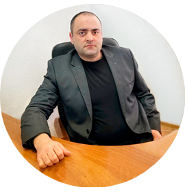

Адвокат Антон Вартанович Григорян

Приветствую вас. Я — действующий адвокат, член адвокатской коллегии «Правовая защита» в городе Новороссийске.
Мой регистрационный номер в реестре адвокатов Краснодарского края — 23/4265. Мне 40 лет, из них более 18 лет я посвятил адвокатской практике, защищая права граждан и бизнеса в Новороссийске и по всему Краснодарскому краю.
За это время я довел до результата десятки сложных уголовных, административных и гражданских дел — от первичного анализа ситуации до вынесения судебного решения.
Профессиональный фундамент: взгляд на систему изнутри
До того как полностью посвятить себя защите гражданских прав и свобод в роли адвоката, я работал в структурах Следственного комитета РФ. Этот этап биографии заложил основу моей нынешней квалификации.
Опыт работы в следственных органах помогает мне понимать логику действий следователей и прокуроров, порядок сбора доказательств и возможные слабые места обвинения. Это позволяет заранее анализировать материалы дела, выявлять нарушения и выстраивать тактику защиты с учетом обстоятельств конкретного дела.
Ключевые направления моей практики
Я оказываю правовую помощь в сложных ситуациях, где важны оперативная реакция и знание закона:
- Уголовное судопроизводство. Защита подозреваемых, обвиняемых и свидетелей на этапе дознания, предварительного следствия и в судах всех инстанций.
- Административное право. Споры с государственными, муниципальными и надзорными органами, защита бизнеса от необоснованных штрафов и санкций.
- Гражданские и арбитражные споры. Сопровождение жилищных, семейных, земельных и трудовых споров, а также дел о возмещении ущерба.
- Защита прав человека. Представительство интересов доверителей при нарушении их конституционных прав и законных интересов.
Мои главные принципы работы
- Прозрачность и честность. Перед тем как взять дело, я анализирую его перспективы. Доверитель знает объективную картину и возможные риски.
- Внимание к деталям. Я тщательно изучаю материалы дела и процессуальные документы: в юриспруденции значение может иметь каждая деталь.
- Вовлеченность 24/7. Правовой кризис может возникнуть в любое время, поэтому в экстренных ситуациях я остаюсь на связи круглосуточно.
- Безопасность бизнеса и конфиденциальность. Соблюдаю адвокатскую тайну и обеспечиваю конфиденциальность личных данных, коммерческой информации и материалов дела.
Условия сотрудничества
Я ценю ваше время, нервы и ресурсы. Первичная консультация — онлайн или при личной встрече в офисе коллегии «Правовая защита» в Новороссийске — проводится бесплатно. Мы разберем ситуацию, наметим первые шаги и определим дальнейший алгоритм действий.
Если вам нужна защита с учетом опыта работы в адвокатуре и понимания следственной системы изнутри, я готов подключиться к вашей задаче.
Связаться со мной
Первичная консультация бесплатна. Позвоните или напишите — обсудим вашу ситуацию и наметим дальнейшие шаги.